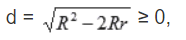

Описана около даден триъгълник окръжност наричаме окръжността с център пресечната точка на симетралите
на страните на триъгълника и радиус разстоянието от тази точка до кой да е от върховете му.
Обикновено радиусът на описаната окръжност се означава с главната латинска буква R.
Около всеки триъгълник може да се опише в окръжност.
Център на описана около триъгълник окръжност – Симетралите на трите страни на триъгълник се пресичат
в една точка – центъра О на описаната около триъгълника окръжност. В зависимост от вида на триъгълника
центърът на описаната около триъгълника окръжност (т. О) е на различно место:
Ако ΔABC е остроъгълен, т. О е вътрешна за триъгълника.
Ако ΔABC е правоъгълен, т. О е среда на хипотенузата АВ.
Ако ΔABC е тъпоъгълен, т. О е външна за триъгълника.
Права на Ойлер – За всеки
произволен триъгълник, ортоцентърът Н, медицентърът М и центърът О на описаната окръжност (пресечната
точка на симетралите на страните) лежат на една права, като НМ = 2МО. Формула на Ойлер (за намиране
на разстоянието между центровете на вписаната и описаната окръжност на триъгълник) – Ако с d отбележим
разстоянието между центровете на вписаната и описаната окръжност на триъгълник, с R – радиуса на
описаната окръжност, а с r – радиуса на вписаната окръжност, то:

като равенството се получава при равностранен триъгълник (защото тогава центровете на описаната и вписаната окръжност съвпадат).